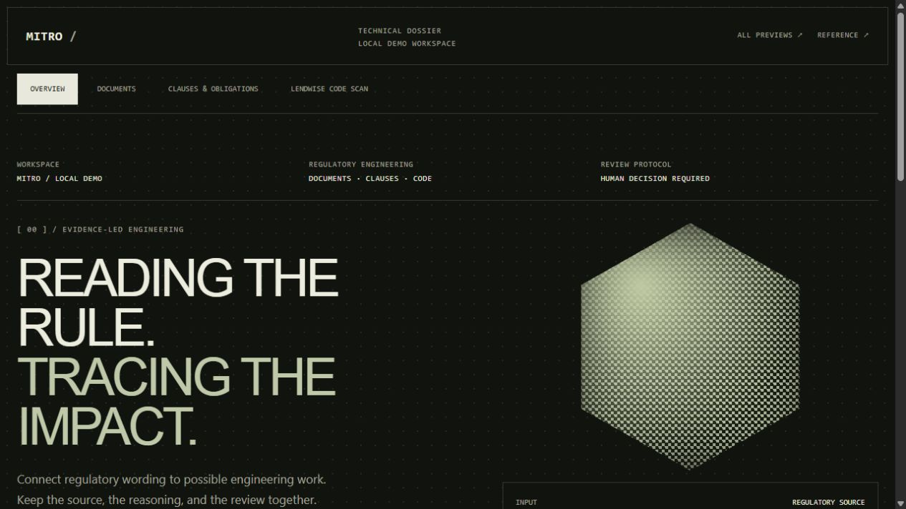
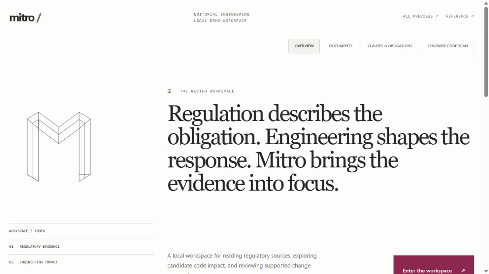
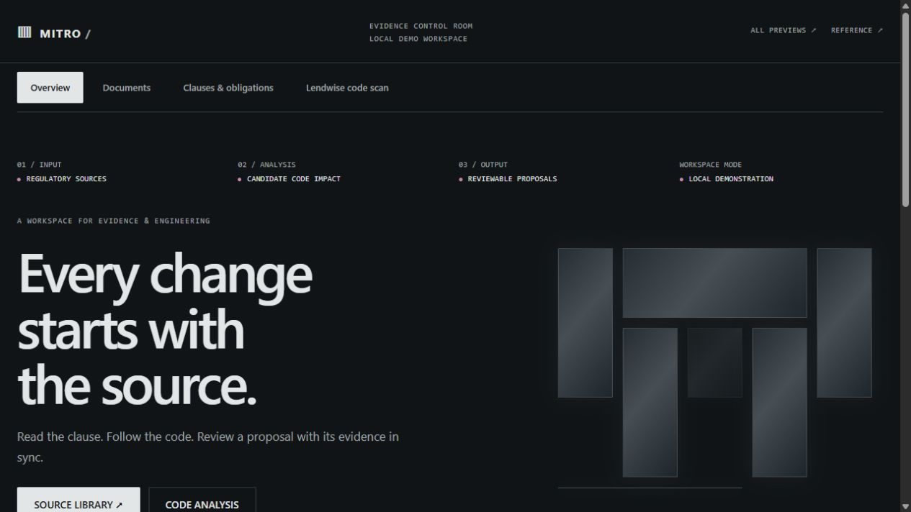
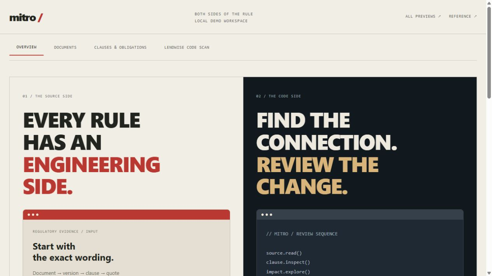

FOUR NEW DIRECTIONS / ONE WORKING PRODUCT
Different perspectives.
The same Mitro.
Compare four additional designs. Each keeps the document library, clause review, obligations, code scan, and supported proposal workflow connected to the existing local API.

02 / INSPIRED BY CHRISTEN DIJOUX
Technical dossier ↗
A monochrome technical dossier. Dithered geometry, terminal labels, and a bold typographic signature.
Open working preview
03 / INSPIRED BY MECHA
Editorial engineering ↗
An airy editorial workspace. Asymmetric composition, a wireframe mark, serif display type, and burgundy actions.
Open working preview
04 / INSPIRED BY LAYERS OF TIME
Evidence control room ↗
A dark evidence control room. Cue labels, luminous structural forms, and a measured review sequence.
Open working preview
05 / INSPIRED BY DEV IN THE HOOD
Both sides of the rule ↗
Two sides of one workflow. Warm source documents meet a dark code workspace, connected through review.
Open working preview